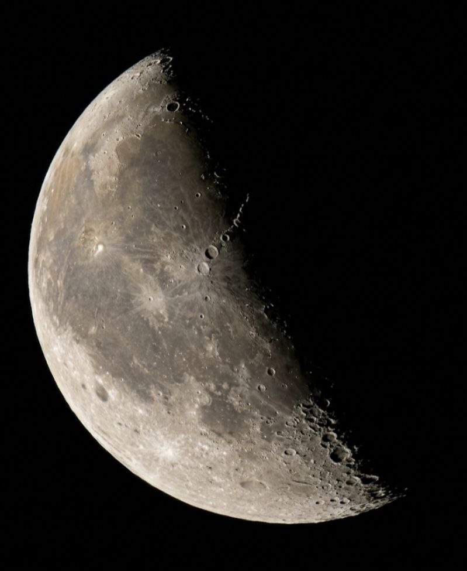
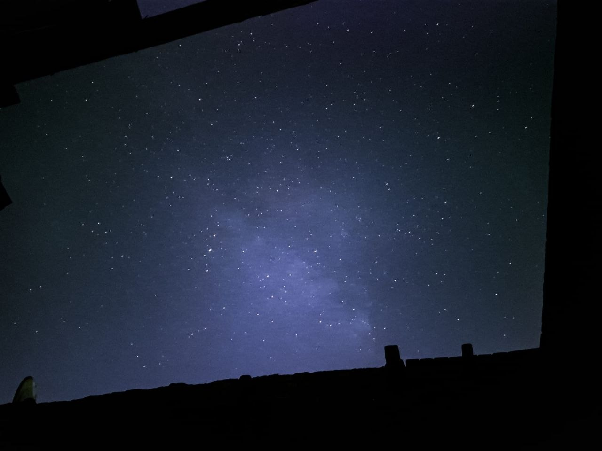
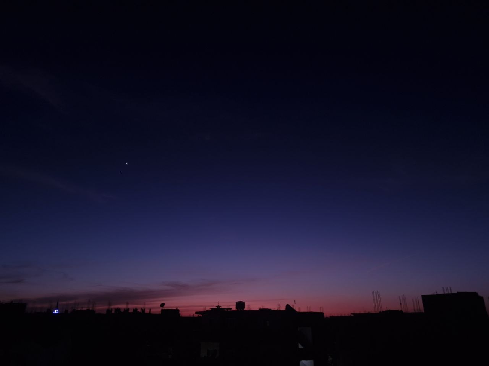
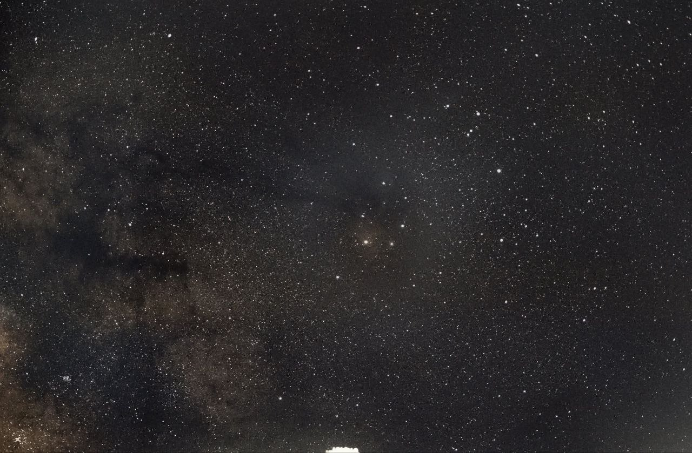
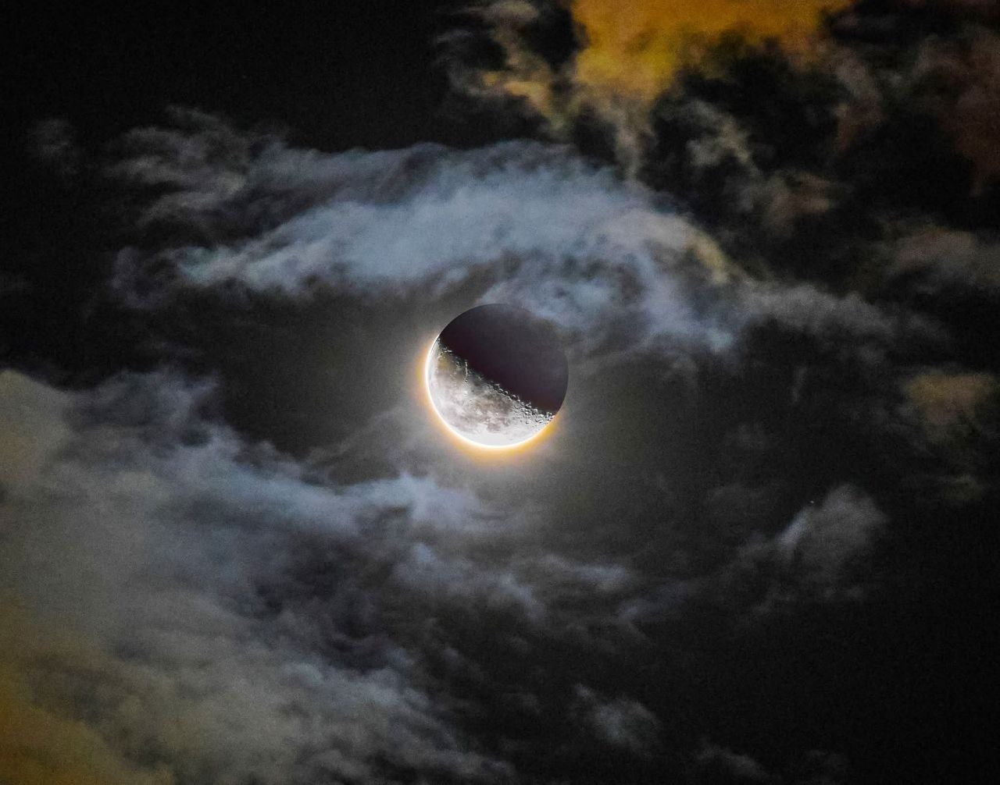
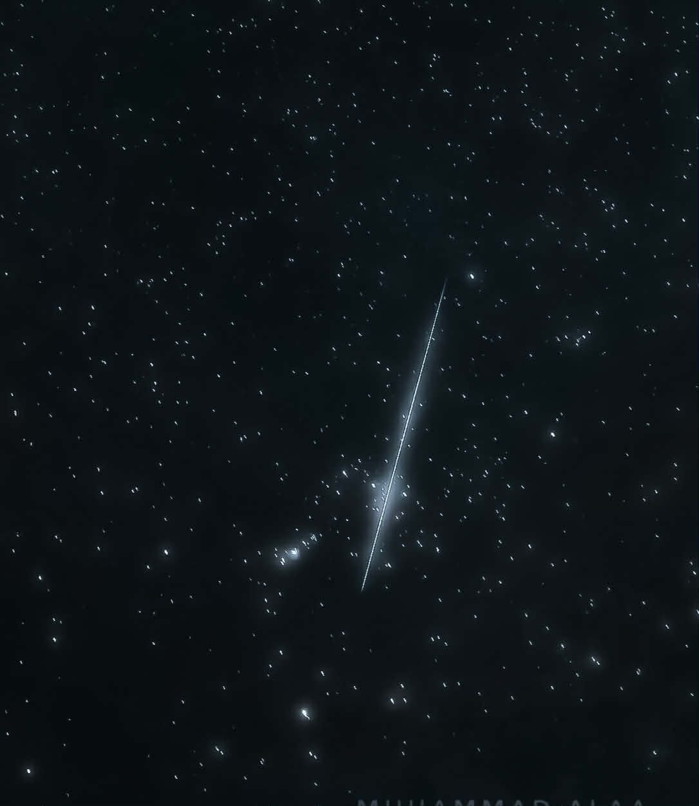
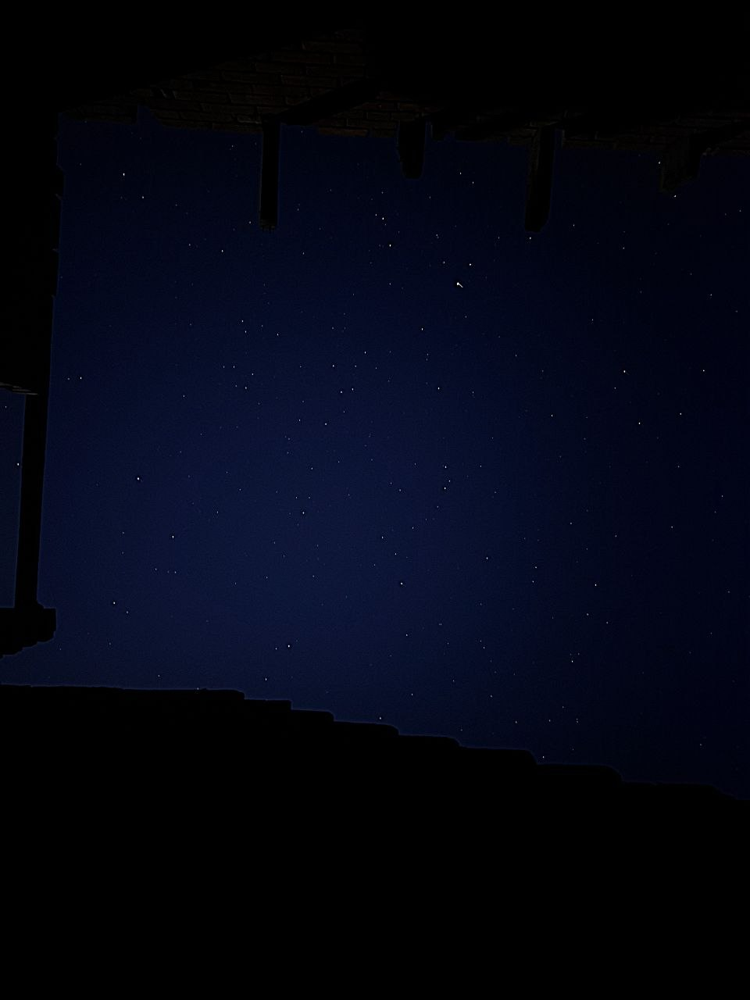

Calibrating Optics
Join AstraVale and learn how to capture the cosmos. From camera fundamentals to deep sky imaging, unlock the secrets of the night sky.
A structured learning path designed to take you from beginner settings to professional image processing.
Mastering manual settings for night work. Understand ISO, aperture, exposure time, and focusing in the dark.
Using apps, charts, and weather data to plan your observation sessions and target selection.
Setting up equatorial mounts, polar alignment, and understanding guiding for long exposures.
Techniques for capturing faint objects like nebulae, galaxies, and globular star clusters.
Stacking frames, stretching histograms, color calibration, and advanced workflows in PixInsight/Photoshop.
Finalizing your images, building a professional astrophotography portfolio, and sharing your work.
Acquire the technical and creative skills required for stunning astrophotography.
Optimize your ISO, aperture, and shutter speed for crisp, low-noise nighttime captures.
Combine multiple exposures to drastically increase the signal-to-noise ratio of your images.
Bring out the hidden details in your raw data using industry-standard processing software.
Learn how to track the night sky to capture long-exposure images of distant galaxies and nebulae.
Use high-frame-rate video techniques to capture stunning details on Jupiter, Saturn, and the Moon.
Ensure your celestial images display scientifically accurate and visually pleasing colors.
A showcase of the incredible astrophotography captured by our workshop participants.







Recognizing the outstanding contributions of our top astrophotographers.
Deep Sky Specialist
Planetary Imaging
Milky Way Photography